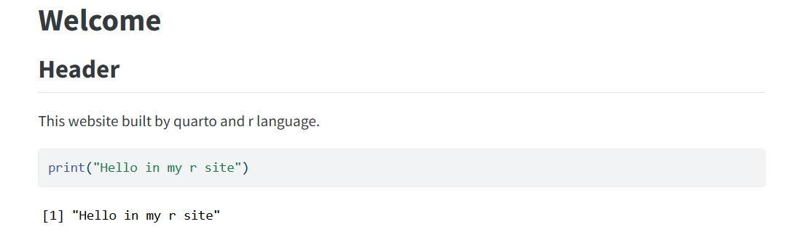

تجربة غريبة : صناعة موقع بلغة آر
September 2, 2025
من أكثر التجارب الغريبة اللي سويتها , بناء موقع إلكتروني بلغة فقط للإحصاء وتحليل البيانات
R language
راح أتكلم عن التجربة الكاملة مع مستودع Github
نبذة
أول شيء لغة آر هي لغة برمجة مختصة بشكل كبير في الرياضيات (وتحديداً الإحصاء وبحوث العمليات) وأيضاً تحليل البيانات.
وطبعاً أصبحت غير شائعة بسبب أن بايثون شاملة وأفضل منها , وكذلك وضحت أن لغة آر فقط لغة للإحصاء وأمور بسيطة وليست مثل بايثون.

الطرق
فيه طريقتين:
- عن طريق مكتبة Distill
- عن طريق مكتبة Quarto وهي مكتبة تنفيذ أكواد جوبيتر (بايثون - جوليا - آر) في المواقع الإلكترونية مع مولد مواقع static بالماركداون مثل jekyll و hugo والخ... وطبعاً المكتبة ذي مدعومة وبقوة في RStudio.
كتبت الواجهات ب .qmd وهي الماركداون المخصص لمكتبة quarto ونفذت فيها أكواد آر قوية شوي بالبداية ثم أكتفيت بأمر print بسبب ضغط الموقع.

طبعاً ربطتها بgithub وصار الdeploy تلقائي على Netlify بطريقة github workflows بملفات الyml.